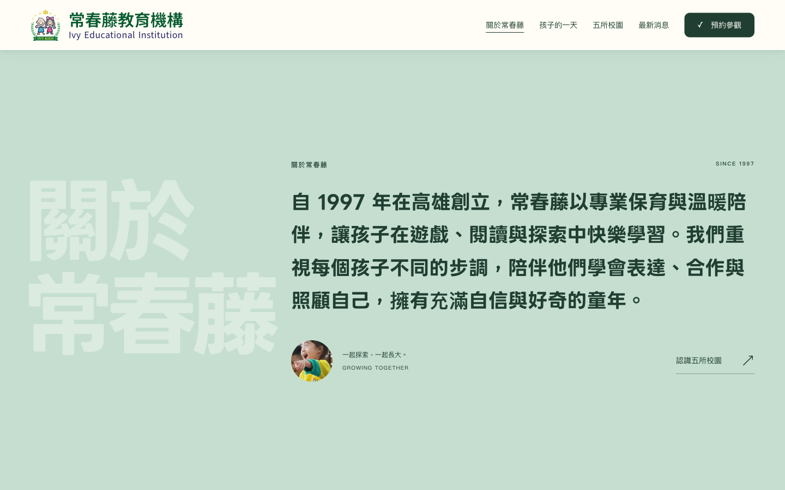
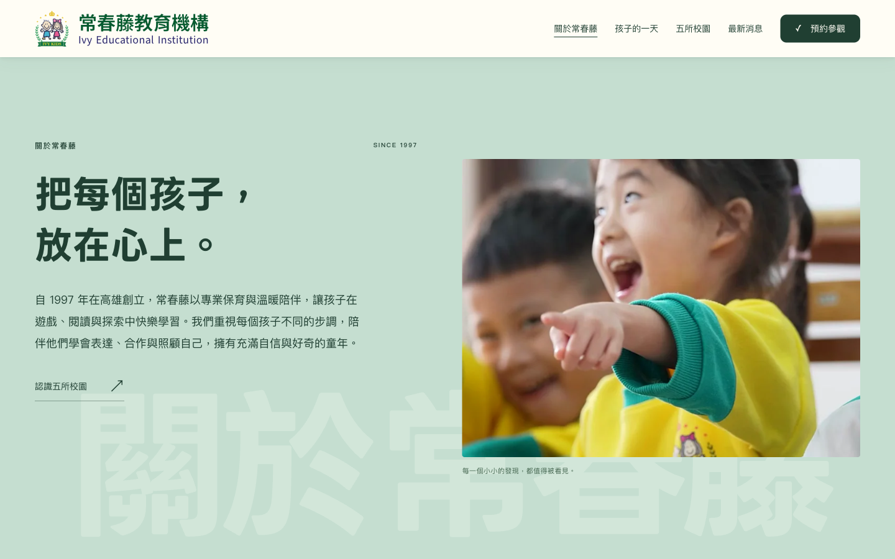
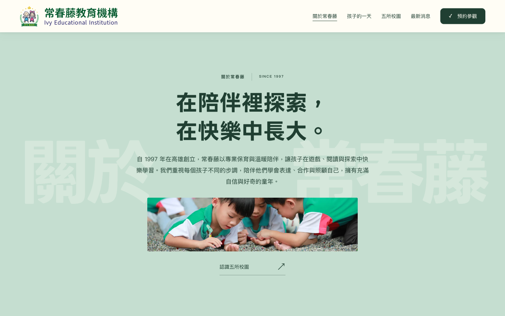

IVY EDUCATION · LAYOUT STUDY
同一段心意，三種呈現。
自 1997 年在高雄創立，常春藤以專業保育與溫暖陪伴，讓孩子在遊戲、閱讀與探索中快樂學習。我們重視每個孩子不同的步調，陪伴他們學會表達、合作與照顧自己，擁有充滿自信與好奇的童年。

A / 大字敘事
放大單段文案，背景文字置左。最接近 Wellington 的文字敘事。

B / 左文右圖
文案搭配孩子的大幅照片，閱讀清楚，也保留溫暖的校園感。

C / 置中留白
主標與文案置中，下方加入橫幅照片，節奏輕盈、留白較多。
點選任一版即可實際捲動。三版皆為：固定導覽、滿版淡綠底、「關於常春藤」背景固定，前景內容隨頁面捲動。手機會自動重排。